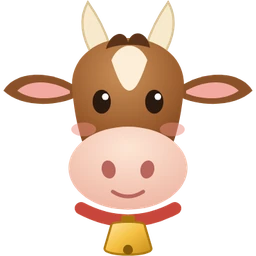

Udder Milk Creamery Co-opReal milk, real farmers, and food brought to you fresh — because what is on store shelves is no longer milk in its true form.
Grass-fed dairy and meat from farmers who avoid pesticides, herbicides, fungicides, GMO seed, and irradiation.
Food harvested or made within 1–2 days — not shelf-stable supplements stripped of nutrients.
We monitor what we bring you. If quality slips, we find another farmer rather than lower our bar.
The main reason we are here for you is that there is no more milk left in the store — and this really is no joke.
All milk has been tampered with and changed — even the organic kind — and it is getting people sick. We have proof — lots of proof.
It is not in its true form anymore because of pasteurization, homogenization, and ultra-pasteurization, and the synthetic vitamin A and D they add back into processed milk.
Synthetic vitamin D is among the worst things for your heart muscle. The best way to boost D levels is with the sun — and if not the sun, raw grass-fed milk or butter.
You are not lactose intolerant. You are pasteurization and homogenization intolerant. This is no joke — this is reality.
When they started to pasteurize milk, it created what people call "lactose intolerance." They make you think something is wrong with you — when in fact pasteurization itself made you unable to digest the milk.
A very small number of people (roughly one in five thousand, maybe more) cannot digest raw milk, but many of them tolerate raw cream, butter, and raw ice cream with no problem.
We strive to keep our customers happy and healthy with fresh-from-the-farm dairy and meat: pesticide-free, fungicide-free, herbicide-free, antibiotic-free, irradiation-free, and GMO-free. No grain is given to the cows used for our dairy or beef.
All farmers we work with are free of pesticides, herbicides, fungicides, and insecticides, as well as GMO seed. They do not irradiate their food. They chose this sustainable, clean farming path years ago, and we trust they adhere to it.
We source mostly from non-Amish farms now; a few partners are Amish. Every farmer has plenty of acreage so nutrition is never compromised — with much rotation of grazing.
This is the land of milk (raw) and honey (local)
Food in America has been compromised for too long. There seem to be more supermarkets than farms near people's homes these days.
People rush to supplements that are no longer in their true form — even many "organic" products are heavily processed. Organic food exists; we offer food that reaches you within 1–2 days after harvest or production.
Give me liberty (with raw / fresh dairy)or give me death(with store-bought knock-off / fake dairy)
Many supplements are so far removed from their original form that most nutrients are gone — except what we know: raw dairy, pickled foods, fermented foods, and fresh garden vegetables. Eating farm-fresh, local, properly farmed food can be healthier than any supplement.
Why local? Not only for the economy — for health benefits from the region where you live. The flora and bacteria in local food, according to many master herbalists, help inoculate against disease and strengthen the immune system.
We gladly serve anyone who wants to stay healthy with raw grass-fed milk — including people managing serious health challenges, allergy sufferers, autoimmune conditions, and those who are sick and tired of being sick and tired.
We also serve members who find it difficult to drive to a farm every week to pick up fresh food for themselves. Remember: when you have patience for your sickness, God rewards you more.
Farms we work with are careful with grain when it is needed — for example, for chickens and goats. Many local farmers buy "GMO-free" grain that still carries pesticides. Our partners either grow their own feed or purchase certified organic grain — not from the typical regional feed suppliers.
We are not farmer-direct, but that can be a plus: we monitor what we bring you and keep standards high. If an item needs better quality and a farmer will not improve it, we move on — sometimes to a farmer farther away. If everyone loves our butter, we keep searching until we find better butter. We will not keep ordering from a farmer whose product has lost quality.
Enjoy everything you receive from us. If anything is not suitable, please let us know — don't be shy. In every bite and sip, remember to thank God for this food before and after you finish.
If you like, get into the habit of saying there is an illegal ban against this kind of dairy toward We the People — it is not illegal. It is an illegal ban against us in the U.S.A.
You do not have to ask anyone's permission for this kind of dairy; it is your inherent right. As soon as you ask, your right becomes a privilege — and power transfers to whoever grants that privilege to take it away.
Thank you Max Kane, who knows the difference between a right and a privilege, and for biking across America for this cause. Thank you Gina and Moaz for being brave enough to start this website and trail-blaze for other farmers.
Thank you to the Amish farmer who, when asked years ago if this was illegal, looked puzzled and answered:
"According to God this is very legal."
He is absolutely, positively correct.
What is wrong is bringing you dirty, unorganic, grain-fed fake milk that has been pasteurized and homogenized — contributing to heart disease, pasteurization intolerance (often called lactose intolerance), and other serious ailments. That is a crime against humanity in reality.
Kathy, Moaz, Gina